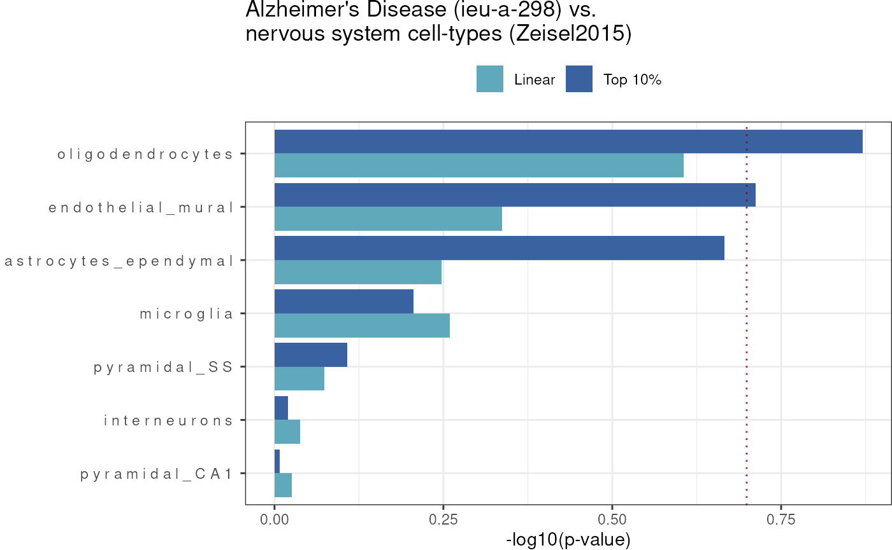

Getting started
Authors: Brian M. Schilder, Alan Murphy, Julien Bryois & Nathan
Skene
Authors: Brian M. Schilder, Alan Murphy, Julien Bryois & Nathan Skene
Updated: Feb-25-2025
Source: Updated: Feb-25-2025
vignettes/MAGMA.Celltyping.Rmd
MAGMA.Celltyping.RmdIntro
MAGMA.Celltyping is a software package that facilitates
conducting cell-type-specific enrichment tests on GWAS summary
statistics.
Setup
Specify where you want the large files to be downloaded to.
NOTE: Make sure you change storage_dir to
somewhere other than tempdir() if you want to make sure the
results aren’t deleted after this R session closes!
storage_dir <- tempdir()Prepare data
GWAS
- We need to have a summary statistics file to analyse as input.
- As an example, you can download UK Biobank summary statistics for
‘fluid_intelligence’ using
get_example_gwas().
Here we provide a pre-munged version of the above file.
Munging
Our lab have created MungeSumstats,
a robust Bioconductor package for formatting multiple types of summary
statistics files. We highly recommend processing your GWAS summary
statistics with MungeSumstats before continuing. See the
full_workflow vignette for more details.
The minimum info needed after munging is:
- “SNP”, “CHR”, and “BP” as first three columns. - It has at least one
of these columns: “Z”,“OR”,“BETA”,“LOG_ODDS”,“SIGNED_SUMSTAT”
path_formatted <- MAGMA.Celltyping::get_example_gwas(
trait = "prospective_memory")Map SNPs to Genes
Note you can input the genome build of your summary statistics for
this step or it can be inferred if left NULL:
genesOutPath <- MAGMA.Celltyping::map_snps_to_genes(
path_formatted = path_formatted,
genome_build = "GRCh37")MAGMA_Files_Public
Rather than preprocessing the GWAS yourself, you can instead use the
MAGMA_Files_Public
database we have created. It contains pre-computed MAGMA SNP-to-genes
mapping files for hundreds of GWAS.
You can browse which GWAS traits are available by looking at the provided metadata.csv file.
magma_dirs <- MAGMA.Celltyping::import_magma_files(ids = "ieu-a-298")## Using built-in example files: ieu-a-298.tsv.gz.35UP.10DOWN## Returning MAGMA directories.CellTypeDataset
ewceData provides a number of CellTypeDatasets (CTD) to
be used a cell-type transcriptomic signature reference files.
If you want to create your own single-cell transcriptomic reference,
you’ll need to first convert it to CTD using the instructions found in
the EWCE package documentation here.
ctd <- ewceData::ctd()## see ?ewceData and browseVignettes('ewceData') for documentation## loading from cacheNote that the cell type dataset loaded in the code above is the Karolinksa cortex/hippocampus data only. For the full Karolinska dataset with hypothalamus and midbrain instead use the following:
ctd <- MAGMA.Celltyping::get_ctd("ctd_allKI")Or for the DRONC seq or AIBS datasets use:
ctd <- get_ctd("ctd_Tasic")
ctd <- get_ctd("ctd_DivSeq")
ctd <- get_ctd("ctd_AIBS")
ctd <- get_ctd("ctd_DRONC_human")
ctd <- get_ctd("ctd_DRONC_mouse")
ctd <- get_ctd("ctd_BlueLake2018_FrontalCortexOnly")
ctd <- get_ctd("ctd_BlueLake2018_VisualCortexOnly")
ctd <- get_ctd("ctd_Saunders")Run cell-type enrichment analyses
MAGMA.Celltyping offers a suite of functions for
conducting various types of cell-type-specific enrichment tests on GWAS
summary statistics.
The celltype_associations_pipeline wraps several
functions that in previous versions of MAGMA.Celltyping had
to be set up and run separately. These include:
-
Linear enrichment:
calculate_celltype_associations(EnrichmentMode = "linear")internally. Activated whenrun_linear=TRUE. -
Top 10% enrichment: Uses
calculate_celltype_associations(EnrichmentMode = "Top 10%")internally. Activated whenrun_top10=TRUE. -
Conditional enrichment: Uses
calculate_conditional_celltype_associationsinternally. Activated whenrun_conditional=TRUE.
Thus, celltype_associations_pipeline is designed to make
these analyses easier to run.
MAGMA_results <- MAGMA.Celltyping::celltype_associations_pipeline(
magma_dirs = magma_dirs,
ctd = ctd,
ctd_species = "mouse",
ctd_name = "Zeisel2015",
run_linear = TRUE,
run_top10 = TRUE)We’ve also saved a pre-computed version of these results as a dataset:
MAGMA_results <- MAGMA.Celltyping::enrichment_resultsPlot results
Merge results
merge_results imports each of the MAGMA enrichment
results files and merges them into one so that they can easily be
plotted and further analysed.
merged_results <- MAGMA.Celltyping::merge_results(
MAGMA_results = MAGMA_results)## Saving full merged results to ==> /tmp/RtmpdFbAJj/MAGMA_celltyping./.lvl1.csv
knitr::kable(merged_results)| GWAS | Celltype | TYPE | OBS_GENES | BETA | BETA_STD | SE | P | log10p | level | Method | EnrichmentMode | GCOV_FILE | CONTROL | CONTROL_label | genesOutCOND | analysis_name | FDR | Celltype_id |
|---|---|---|---|---|---|---|---|---|---|---|---|---|---|---|---|---|---|---|
| ieu-a-298.tsv.gz.35UP.10DOWN | o l i g o d e n d r o c y t e s | COVAR | 962 | 0.0016776 | 0.0199640 | 0.0024613 | 0.24785 | -0.6058111 | 1 | MAGMA | Linear | ieu-a-298.tsv.gz.35UP.10DOWN.level1.Zeisel2015_linear.gsa.out | BASELINE | BASELINE | NA | Zeisel2015_linear | 0.867475 | oligodendrocytes |
| ieu-a-298.tsv.gz.35UP.10DOWN | a s t r o c y t e s _ e p e n d y m a l | SET | 104 | 0.0671670 | 0.0178860 | 0.0853000 | 0.21562 | -0.6663110 | 1 | MAGMA | Top 10% | ieu-a-298.tsv.gz.35UP.10DOWN.level1.Zeisel2015_top10.gsa.out | BASELINE | BASELINE | NA | Zeisel2015_top10 | 0.867475 | astrocytes_ependymal |
| ieu-a-298.tsv.gz.35UP.10DOWN | e n d o t h e l i a l _ m u r a l | SET | 98 | 0.0831670 | 0.0215500 | 0.0962320 | 0.19384 | -0.7125566 | 1 | MAGMA | Top 10% | ieu-a-298.tsv.gz.35UP.10DOWN.level1.Zeisel2015_top10.gsa.out | BASELINE | BASELINE | NA | Zeisel2015_top10 | 0.867475 | endothelial_mural |
| ieu-a-298.tsv.gz.35UP.10DOWN | o l i g o d e n d r o c y t e s | SET | 94 | 0.1124000 | 0.0285690 | 0.1017200 | 0.13472 | -0.8705679 | 1 | MAGMA | Top 10% | ieu-a-298.tsv.gz.35UP.10DOWN.level1.Zeisel2015_top10.gsa.out | BASELINE | BASELINE | NA | Zeisel2015_top10 | 0.867475 | oligodendrocytes |
| ieu-a-298.tsv.gz.35UP.10DOWN | a s t r o c y t e s _ e p e n d y m a l | COVAR | 962 | -0.0003729 | -0.0045268 | 0.0022566 | 0.56561 | -0.2474829 | 1 | MAGMA | Linear | ieu-a-298.tsv.gz.35UP.10DOWN.level1.Zeisel2015_linear.gsa.out | BASELINE | BASELINE | NA | Zeisel2015_linear | 0.981580 | astrocytes_ependymal |
| ieu-a-298.tsv.gz.35UP.10DOWN | e n d o t h e l i a l _ m u r a l | COVAR | 962 | 0.0002391 | 0.0029144 | 0.0023811 | 0.46002 | -0.3372233 | 1 | MAGMA | Linear | ieu-a-298.tsv.gz.35UP.10DOWN.level1.Zeisel2015_linear.gsa.out | BASELINE | BASELINE | NA | Zeisel2015_linear | 0.981580 | endothelial_mural |
| ieu-a-298.tsv.gz.35UP.10DOWN | i n t e r n e u r o n s | COVAR | 962 | -0.0033333 | -0.0393200 | 0.0024009 | 0.91728 | -0.0374981 | 1 | MAGMA | Linear | ieu-a-298.tsv.gz.35UP.10DOWN.level1.Zeisel2015_linear.gsa.out | BASELINE | BASELINE | NA | Zeisel2015_linear | 0.981580 | interneurons |
| ieu-a-298.tsv.gz.35UP.10DOWN | m i c r o g l i a | COVAR | 962 | -0.0002839 | -0.0036131 | 0.0022446 | 0.55030 | -0.2594005 | 1 | MAGMA | Linear | ieu-a-298.tsv.gz.35UP.10DOWN.level1.Zeisel2015_linear.gsa.out | BASELINE | BASELINE | NA | Zeisel2015_linear | 0.981580 | microglia |
| ieu-a-298.tsv.gz.35UP.10DOWN | p y r a m i d a l _ C A 1 | COVAR | 962 | -0.0037493 | -0.0440450 | 0.0023802 | 0.94218 | -0.0258661 | 1 | MAGMA | Linear | ieu-a-298.tsv.gz.35UP.10DOWN.level1.Zeisel2015_linear.gsa.out | BASELINE | BASELINE | NA | Zeisel2015_linear | 0.981580 | pyramidal_CA1 |
| ieu-a-298.tsv.gz.35UP.10DOWN | p y r a m i d a l _ S S | COVAR | 962 | -0.0023657 | -0.0282810 | 0.0023306 | 0.84480 | -0.0732461 | 1 | MAGMA | Linear | ieu-a-298.tsv.gz.35UP.10DOWN.level1.Zeisel2015_linear.gsa.out | BASELINE | BASELINE | NA | Zeisel2015_linear | 0.981580 | pyramidal_SS |
| ieu-a-298.tsv.gz.35UP.10DOWN | i n t e r n e u r o n s | SET | 106 | -0.1554800 | -0.0417660 | 0.0911160 | 0.95587 | -0.0196012 | 1 | MAGMA | Top 10% | ieu-a-298.tsv.gz.35UP.10DOWN.level1.Zeisel2015_top10.gsa.out | BASELINE | BASELINE | NA | Zeisel2015_top10 | 0.981580 | interneurons |
| ieu-a-298.tsv.gz.35UP.10DOWN | m i c r o g l i a | SET | 91 | -0.0341170 | -0.0085425 | 0.1093000 | 0.62250 | -0.2058606 | 1 | MAGMA | Top 10% | ieu-a-298.tsv.gz.35UP.10DOWN.level1.Zeisel2015_top10.gsa.out | BASELINE | BASELINE | NA | Zeisel2015_top10 | 0.981580 | microglia |
| ieu-a-298.tsv.gz.35UP.10DOWN | p y r a m i d a l _ C A 1 | SET | 111 | -0.1930200 | -0.0529550 | 0.0923320 | 0.98158 | -0.0080743 | 1 | MAGMA | Top 10% | ieu-a-298.tsv.gz.35UP.10DOWN.level1.Zeisel2015_top10.gsa.out | BASELINE | BASELINE | NA | Zeisel2015_top10 | 0.981580 | pyramidal_CA1 |
| ieu-a-298.tsv.gz.35UP.10DOWN | p y r a m i d a l _ S S | SET | 98 | -0.0750110 | -0.0194370 | 0.0965900 | 0.78120 | -0.1072378 | 1 | MAGMA | Top 10% | ieu-a-298.tsv.gz.35UP.10DOWN.level1.Zeisel2015_top10.gsa.out | BASELINE | BASELINE | NA | Zeisel2015_top10 | 0.981580 | pyramidal_SS |
Heatmap
Now we’ll construct a heatmap visualizing the enrichment results, such that each GWAS is shown on the y-axis and each cell-type is shown on the x-axis. Results can be further facetted by what kind of test was run (linear, top10%, and/or conditional).
heat <- MAGMA.Celltyping::results_heatmap(
merged_results = merged_results,
title = "Alzheimer's Disease (ieu-a-298) vs.\nnervous system cell-types (Zeisel2015)",
fdr_thresh = 1)## 14 results @ FDR < 1## Warning: The `facets` argument of `facet_grid()` is deprecated as of ggplot2 2.2.0.
## ℹ Please use the `rows` argument instead.
## ℹ The deprecated feature was likely used in the MAGMA.Celltyping package.
## Please report the issue at
## <https://github.com/neurogenomics/MAGMA_Celltyping/issues>.
## This warning is displayed once every 8 hours.
## Call `lifecycle::last_lifecycle_warnings()` to see where this warning was
## generated.
Bar plot
Now we can also plot the p-value results (-log10 p-values) based on a significance threshold (for either linear and top10%) together in a bar plot (sorted by top10% results).
barplot_ggplot <- MAGMA.Celltyping::results_barplot(
merged_results = merged_results,
title="Alzheimer's Disease (ieu-a-298) vs.\nnervous system cell-types (Zeisel2015)",
fdr_thresh = 1,
horz_line_p = .2
)## 14 results @ FDR < 1
Top results
Top phenotypes
Get the phenotypes with the greatest number of significant cell-type enrichment results.
top_phenos <- merged_results %>%
dplyr::group_by(EnrichmentMode, GWAS) %>%
dplyr::summarise(Celltype=dplyr::n_distinct(Celltype)) %>%
dplyr::arrange(dplyr::desc(Celltype))## `summarise()` has grouped output by 'EnrichmentMode'. You can override using
## the `.groups` argument.
knitr::kable(top_phenos)| EnrichmentMode | GWAS | Celltype |
|---|---|---|
| Linear | ieu-a-298.tsv.gz.35UP.10DOWN | 7 |
| Top 10% | ieu-a-298.tsv.gz.35UP.10DOWN | 7 |
Top enrichments
Get the phenotypes-celltype enrichment results with the most significant p-values (per phenotype).
top_enrich <- merged_results %>%
dplyr::group_by(EnrichmentMode, GWAS) %>%
dplyr::slice_min(FDR, n = 2)
knitr::kable(top_enrich) | GWAS | Celltype | TYPE | OBS_GENES | BETA | BETA_STD | SE | P | log10p | level | Method | EnrichmentMode | GCOV_FILE | CONTROL | CONTROL_label | genesOutCOND | analysis_name | FDR | Celltype_id |
|---|---|---|---|---|---|---|---|---|---|---|---|---|---|---|---|---|---|---|
| ieu-a-298.tsv.gz.35UP.10DOWN | o l i g o d e n d r o c y t e s | COVAR | 962 | 0.0016776 | 0.0199640 | 0.0024613 | 0.24785 | -0.6058111 | 1 | MAGMA | Linear | ieu-a-298.tsv.gz.35UP.10DOWN.level1.Zeisel2015_linear.gsa.out | BASELINE | BASELINE | NA | Zeisel2015_linear | 0.867475 | oligodendrocytes |
| ieu-a-298.tsv.gz.35UP.10DOWN | a s t r o c y t e s _ e p e n d y m a l | COVAR | 962 | -0.0003729 | -0.0045268 | 0.0022566 | 0.56561 | -0.2474829 | 1 | MAGMA | Linear | ieu-a-298.tsv.gz.35UP.10DOWN.level1.Zeisel2015_linear.gsa.out | BASELINE | BASELINE | NA | Zeisel2015_linear | 0.981580 | astrocytes_ependymal |
| ieu-a-298.tsv.gz.35UP.10DOWN | e n d o t h e l i a l _ m u r a l | COVAR | 962 | 0.0002391 | 0.0029144 | 0.0023811 | 0.46002 | -0.3372233 | 1 | MAGMA | Linear | ieu-a-298.tsv.gz.35UP.10DOWN.level1.Zeisel2015_linear.gsa.out | BASELINE | BASELINE | NA | Zeisel2015_linear | 0.981580 | endothelial_mural |
| ieu-a-298.tsv.gz.35UP.10DOWN | i n t e r n e u r o n s | COVAR | 962 | -0.0033333 | -0.0393200 | 0.0024009 | 0.91728 | -0.0374981 | 1 | MAGMA | Linear | ieu-a-298.tsv.gz.35UP.10DOWN.level1.Zeisel2015_linear.gsa.out | BASELINE | BASELINE | NA | Zeisel2015_linear | 0.981580 | interneurons |
| ieu-a-298.tsv.gz.35UP.10DOWN | m i c r o g l i a | COVAR | 962 | -0.0002839 | -0.0036131 | 0.0022446 | 0.55030 | -0.2594005 | 1 | MAGMA | Linear | ieu-a-298.tsv.gz.35UP.10DOWN.level1.Zeisel2015_linear.gsa.out | BASELINE | BASELINE | NA | Zeisel2015_linear | 0.981580 | microglia |
| ieu-a-298.tsv.gz.35UP.10DOWN | p y r a m i d a l _ C A 1 | COVAR | 962 | -0.0037493 | -0.0440450 | 0.0023802 | 0.94218 | -0.0258661 | 1 | MAGMA | Linear | ieu-a-298.tsv.gz.35UP.10DOWN.level1.Zeisel2015_linear.gsa.out | BASELINE | BASELINE | NA | Zeisel2015_linear | 0.981580 | pyramidal_CA1 |
| ieu-a-298.tsv.gz.35UP.10DOWN | p y r a m i d a l _ S S | COVAR | 962 | -0.0023657 | -0.0282810 | 0.0023306 | 0.84480 | -0.0732461 | 1 | MAGMA | Linear | ieu-a-298.tsv.gz.35UP.10DOWN.level1.Zeisel2015_linear.gsa.out | BASELINE | BASELINE | NA | Zeisel2015_linear | 0.981580 | pyramidal_SS |
| ieu-a-298.tsv.gz.35UP.10DOWN | a s t r o c y t e s _ e p e n d y m a l | SET | 104 | 0.0671670 | 0.0178860 | 0.0853000 | 0.21562 | -0.6663110 | 1 | MAGMA | Top 10% | ieu-a-298.tsv.gz.35UP.10DOWN.level1.Zeisel2015_top10.gsa.out | BASELINE | BASELINE | NA | Zeisel2015_top10 | 0.867475 | astrocytes_ependymal |
| ieu-a-298.tsv.gz.35UP.10DOWN | e n d o t h e l i a l _ m u r a l | SET | 98 | 0.0831670 | 0.0215500 | 0.0962320 | 0.19384 | -0.7125566 | 1 | MAGMA | Top 10% | ieu-a-298.tsv.gz.35UP.10DOWN.level1.Zeisel2015_top10.gsa.out | BASELINE | BASELINE | NA | Zeisel2015_top10 | 0.867475 | endothelial_mural |
| ieu-a-298.tsv.gz.35UP.10DOWN | o l i g o d e n d r o c y t e s | SET | 94 | 0.1124000 | 0.0285690 | 0.1017200 | 0.13472 | -0.8705679 | 1 | MAGMA | Top 10% | ieu-a-298.tsv.gz.35UP.10DOWN.level1.Zeisel2015_top10.gsa.out | BASELINE | BASELINE | NA | Zeisel2015_top10 | 0.867475 | oligodendrocytes |
Session Info
utils::sessionInfo()## R Under development (unstable) (2025-02-15 r87726)
## Platform: x86_64-pc-linux-gnu
## Running under: Ubuntu 24.04.1 LTS
##
## Matrix products: default
## BLAS: /usr/lib/x86_64-linux-gnu/openblas-pthread/libblas.so.3
## LAPACK: /usr/lib/x86_64-linux-gnu/openblas-pthread/libopenblasp-r0.3.26.so; LAPACK version 3.12.0
##
## locale:
## [1] LC_CTYPE=en_US.UTF-8 LC_NUMERIC=C
## [3] LC_TIME=en_US.UTF-8 LC_COLLATE=en_US.UTF-8
## [5] LC_MONETARY=en_US.UTF-8 LC_MESSAGES=en_US.UTF-8
## [7] LC_PAPER=en_US.UTF-8 LC_NAME=C
## [9] LC_ADDRESS=C LC_TELEPHONE=C
## [11] LC_MEASUREMENT=en_US.UTF-8 LC_IDENTIFICATION=C
##
## time zone: UTC
## tzcode source: system (glibc)
##
## attached base packages:
## [1] stats graphics grDevices utils datasets methods base
##
## other attached packages:
## [1] ewceData_1.15.0 ExperimentHub_2.15.0 AnnotationHub_3.15.0
## [4] BiocFileCache_2.15.1 dbplyr_2.5.0 BiocGenerics_0.53.6
## [7] generics_0.1.3 dplyr_1.1.4 MAGMA.Celltyping_2.0.15
## [10] BiocStyle_2.35.0
##
## loaded via a namespace (and not attached):
## [1] splines_4.5.0 BiocIO_1.17.1
## [3] bitops_1.0-9 ggplotify_0.1.2
## [5] filelock_1.0.3 tibble_3.2.1
## [7] R.oo_1.27.0 XML_3.99-0.18
## [9] lifecycle_1.0.4 Rdpack_2.6.2
## [11] rstatix_0.7.2 lattice_0.22-6
## [13] MASS_7.3-64 backports_1.5.0
## [15] magrittr_2.0.3 limma_3.63.4
## [17] plotly_4.10.4 sass_0.4.9
## [19] rmarkdown_2.29 jquerylib_0.1.4
## [21] yaml_2.3.10 HGNChelper_0.8.15
## [23] DBI_1.2.3 minqa_1.2.8
## [25] abind_1.4-8 GenomicRanges_1.59.1
## [27] purrr_1.0.4 R.utils_2.13.0
## [29] RCurl_1.98-1.16 yulab.utils_0.2.0
## [31] VariantAnnotation_1.53.1 rappdirs_0.3.3
## [33] GenomeInfoDbData_1.2.13 IRanges_2.41.3
## [35] S4Vectors_0.45.4 tidytree_0.4.6
## [37] pkgdown_2.1.1 codetools_0.2-20
## [39] DelayedArray_0.33.6 tidyselect_1.2.1
## [41] aplot_0.2.4 UCSC.utils_1.3.1
## [43] farver_2.1.2 lme4_1.1-36
## [45] matrixStats_1.5.0 stats4_4.5.0
## [47] GenomicAlignments_1.43.0 jsonlite_1.9.0
## [49] Formula_1.2-5 systemfonts_1.2.1
## [51] tools_4.5.0 treeio_1.31.0
## [53] ragg_1.3.3 Rcpp_1.0.14
## [55] glue_1.8.0 SparseArray_1.7.6
## [57] xfun_0.51 MatrixGenerics_1.19.1
## [59] GenomeInfoDb_1.43.4 RNOmni_1.0.1.2
## [61] withr_3.0.2 BiocManager_1.30.25
## [63] fastmap_1.2.0 boot_1.3-31
## [65] digest_0.6.37 mime_0.12
## [67] R6_2.6.1 gridGraphics_0.5-1
## [69] textshaping_1.0.0 colorspace_2.1-1
## [71] RSQLite_2.3.9 R.methodsS3_1.8.2
## [73] tidyr_1.3.1 data.table_1.17.0
## [75] rtracklayer_1.67.1 httr_1.4.7
## [77] htmlwidgets_1.6.4 S4Arrays_1.7.3
## [79] pkgconfig_2.0.3 gtable_0.3.6
## [81] blob_1.2.4 SingleCellExperiment_1.29.1
## [83] XVector_0.47.2 htmltools_0.5.8.1
## [85] carData_3.0-5 bookdown_0.42
## [87] scales_1.3.0 Biobase_2.67.0
## [89] png_0.1-8 reformulas_0.4.0
## [91] ggfun_0.1.8 ggdendro_0.2.0
## [93] knitr_1.49 reshape2_1.4.4
## [95] rjson_0.2.23 nlme_3.1-167
## [97] curl_6.2.1 nloptr_2.1.1
## [99] cachem_1.1.0 stringr_1.5.1
## [101] BiocVersion_3.21.1 parallel_4.5.0
## [103] AnnotationDbi_1.69.0 restfulr_0.0.15
## [105] desc_1.4.3 pillar_1.10.1
## [107] grid_4.5.0 vctrs_0.6.5
## [109] ggpubr_0.6.0 car_3.1-3
## [111] evaluate_1.0.3 orthogene_1.13.0
## [113] GenomicFeatures_1.59.1 cli_3.6.4
## [115] compiler_4.5.0 Rsamtools_2.23.1
## [117] rlang_1.1.5 crayon_1.5.3
## [119] grr_0.9.5 ggsignif_0.6.4
## [121] labeling_0.4.3 gprofiler2_0.2.3
## [123] EWCE_1.15.1 ieugwasr_1.0.1
## [125] plyr_1.8.9 fs_1.6.5
## [127] stringi_1.8.4 viridisLite_0.4.2
## [129] BiocParallel_1.41.2 babelgene_22.9
## [131] munsell_0.5.1 Biostrings_2.75.4
## [133] lazyeval_0.2.2 gh_1.4.1
## [135] homologene_1.4.68.19.3.27 Matrix_1.7-2
## [137] MungeSumstats_1.15.12 BSgenome_1.75.1
## [139] patchwork_1.3.0 bit64_4.6.0-1
## [141] ggplot2_3.5.1 KEGGREST_1.47.0
## [143] statmod_1.5.0 SummarizedExperiment_1.37.0
## [145] rbibutils_2.3 broom_1.0.7
## [147] memoise_2.0.1 bslib_0.9.0
## [149] ggtree_3.15.0 bit_4.5.0.1
## [151] splitstackshape_1.4.8 ape_5.8-1